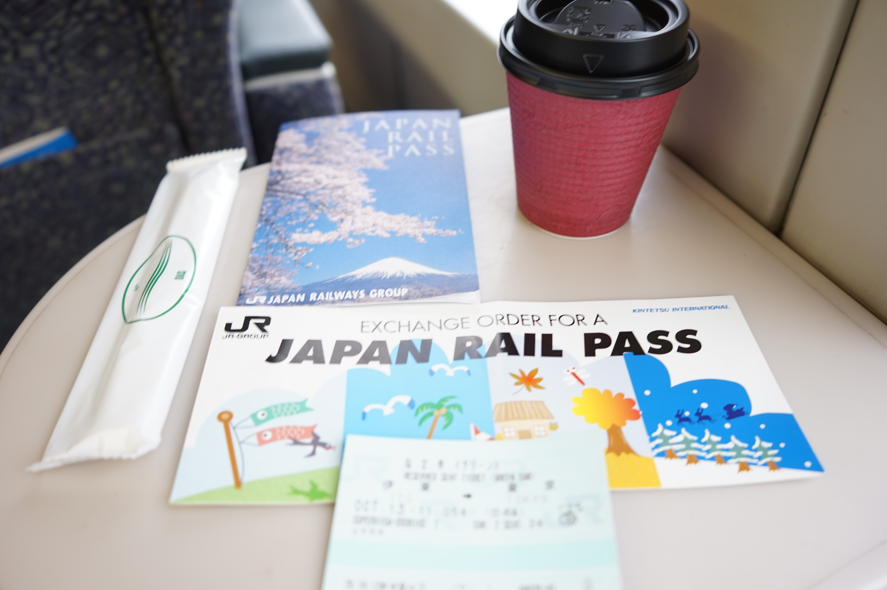

V Japonsku je nejrychlejší cestování vlaky!
Budete proto potřebovat JR Pass, a to nejlépe s platností pro celé Japonsko – a to od Hokkaidó, Honšú, Šikoku až po Kjúšú. Pokud víte, že toho chcete projet víc, než jen pár regionů, je JR Pass jasná volba. S JR Passem už jsem totiž nemusela kupovat jízdenky na šinkanseny a JR linky, a ani kupovat rezervace – jsou v ceně JR Passu.
JR Pass má obecně řadu výhod a slev, např. pro některé linky autobusů, a nebo umožňují získat slevu na jízdu v nejrychlejším šinkansenu v Japonsku „Nozomi", kterou JR Pass nepokrývá.
Jak moc se JR Pass vyplatí?
Je na zvážení, zda se Vám JR Pass cenově vyplatí a jestli pro Vás není výhodnější koupit si jednotlivé jízdenky – pokud tedy nehodláte cestovat daleko a často. V mém případě, kdy jsme projížděli téměř půlku Japonska, se JR Pass určitě vyplatil.
Podívejte se proto na web JR Pass přímo na mapu JR Fare Calculator, kde se Vám zobrazí právě jen trasy platné pro JR linky, a kde si můžete spočítat, jak moc celkem s JR Passem ušetříte nebo neušetříte při plánování trasy vlakem po Japonsku. Kalkulačka totiž počítá s běžnými cenami jednotlivých jízdenek ku celkové ceně vybraného JR Passu.
Platí pravidlo: Čím delší celá trasa pobytu je, tím levněji Vás JR Pass vyjde oproti nákupu jednotlivých jízdenek. Naklikejte si proto na stránce jednotlivá místa, která hodláte navštívit i se zpátečními cestami a uvidíte, zda se ocitnete v zelených, nebo červených číslech. Je to také skvělý nástroj pro tvorbu a sladění Vašeho itineráře.
„JR PASS rozhodně stál za to, a to už jen kvůli tomu, že jsme nemuseli stát v šílených frontách lidí, abychom si koupili lístky, nebo hlídat, kde nám platí jaký oblastní pass."
Automaty na rezervaci místenek
Občas je potřeba vystát malou frontu o pár lidech u rezervačního automatu, pokud budete rezervaci vyžadovat. Na nádražích jsou automaty na rezervace odděleny od těch jízdenkových, takže se v pohodě vyhnete klasickým frontám na jízdenky. Můžete taky zvolit cestu online rezervace, avšak zde už musíte mít zakoupený JR PASS. Tuhle možnost jsem nevyužila a vždy postačila rezervace přímo na nádraží.
„Je dobré vědět, že v šinkansenu typu „Thunderbird" MUSÍTE mít rezervaci na místo vždy dopředu, a to i s JR PASS. Byli jsme o tom informováni v hlášení přímo na nádraží, avšak jsme kvůli nutné rezervaci nestihli dřívější vlak."
Kde všude platí JR Pass?
JR PASS platí na všechny vlaky s označením „JR", které najdete i přímo na vlakové soupravě nebo nádražní tabuli. Jedná se především o hlavní tratové spoje a šinkanseny. Neplatí např. na menší lokální vlaky, kde už si musíte přikoupit jízdenku zvlášť, a to typicky v odlehlejších oblastech, např. část cesty do hor Jigokudani – Snow Monkey Park, nebo k Mt. Fuji. Pokud stále tápete, na který vlak vám JR Pass platí, osvědčila se nám appka NAVITIME, která zobrazuje pouze spoje přes vybraný JR Pass, nebo možnost vybrání pouze určitých regionů – JR oblastní pasy (např. Hokuriku Arch Pass, atp...). Oblastní cestovní pasy se vyplatí, pokud zamýšlíte setrvat jen v určitém regionu. Lze si přikoupit také více oblastí, kombinovat je a tím ušetřit.
Jak a kdy používat JR Pass?
Po výměně poukazu za originál na letišti nebo nádráží v Japonsku jsem mohla začít JR Pass používat hned v den nabytí platnosti. Kartičku budete vkládat vždy do terminálu jemu určenému při příchodu k nástupišti. Terminál si jízdenku vezme a vysune ji na protější straně, zároveň se rozsvítí zelená a otevřou se dvířka asi jako v metru. Můžete jít tedy vesele dál na nástupiště a do vlaku. To samé se děje i při výstupu. Mějte proto JR Pass vždy po ruce. Pokud by nastal problém s načtením, je vždy po ruce hlídka a pomůže Vám.

JR PASS (zelená kartička)